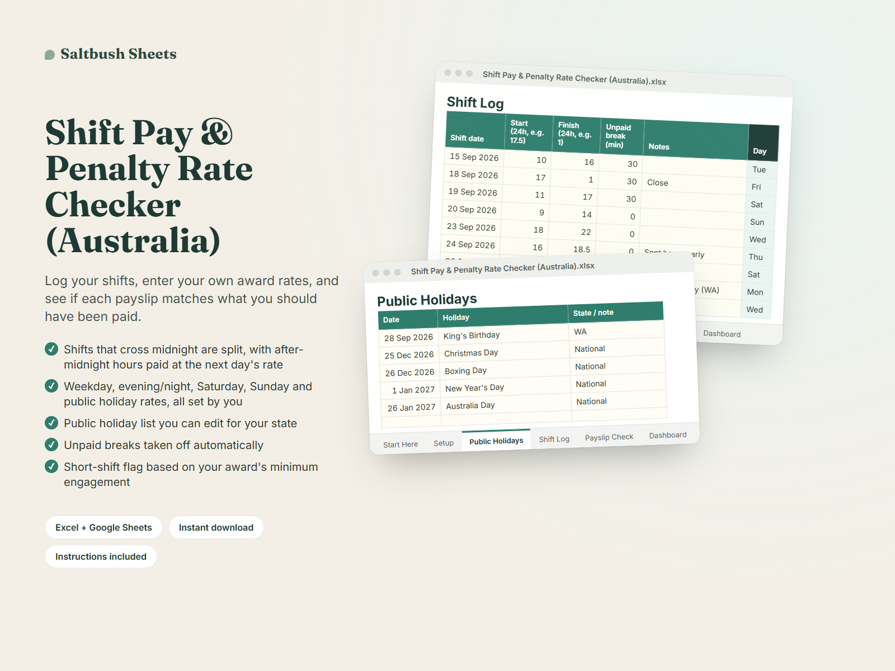

All templates / Shift Pay & Penalty Rate Checker (Australia)



See it working
In the example, a Friday 5pm–1am close with a 30-minute break comes to $243.50: 6.5 weekday hours, 5 of them at the evening rate, plus 1 hour at Saturday's rate. The second fortnight should pay $1,254.25, but the payslip shows $1,089.25, so the sheet flags $165.00 to check: the King's Birthday hours paid at the weekday rate.
What you get
- Excel workbook (.xlsx) that also opens in Google Sheets
- Start Here tab with instructions
- Example data (easy to clear)
- Printable Dashboard and Payslip Check
Features
- Shifts that cross midnight are split, with after-midnight hours paid at the next day's rate
- Weekday, evening/night, Saturday, Sunday and public holiday rates, all set by you
- Public holiday list you can edit for your state
- Unpaid breaks taken off automatically
- Short-shift flag based on your award's minimum engagement
- Payslip check per pay period: hours, gross pay and estimated super
- Dashboard with total shortfall flagged and pay by rate type
- Works in Excel and the free Google Sheets app on your phone
Who it's for
- Casual hospo workers doing late closes and weekends
- Retail and supermarket casuals on changing rosters
- Warehouse and night-shift workers whose shifts cross midnight
About this template
Penalty rates are confusing. A Friday close that runs past midnight can be paid at three different rates, public holidays are easy to miss, and payslips rarely show the working. This spreadsheet does the maths so you can check.
Enter your own casual rates from your award's pay guide (weekday, evening/night, Saturday, Sunday and public holiday). Then log each shift with its start, finish and unpaid break. The sheet splits shifts that cross midnight, pays the after-midnight hours at the next day's rate, adds evening/night hours, and flags short shifts.
On the Payslip Check tab, type in the gross pay, hours and super from each payslip. The sheet totals your logged shifts for that pay period and shows the difference, with a clear status: Matches, Check: paid less, or Paid more. It also estimates super at the rate you set.
It doesn't know your award, so you enter the rates. It compares gross pay before tax and doesn't calculate overtime or allowances. Example data is included so you can see how it works before you start.
Is it worth it?
A$15 one-off, no subscription. That's less than one hour of casual pay. Works in Excel or the free Google Sheets, instant download, prices in AUD.
Digital download only: nothing is posted to you. Example data is included and easy to clear.
Questions
What if my award has a different evening time?
You set when the evening/night rate starts and ends on the Setup tab.
Do I need Excel?
No. It also opens in the free Google Sheets app, including on your phone.
Does it know my award rates?
No. You enter your own rates from the Fair Work pay guide for your award. That way it works for hospitality, retail, warehousing and other awards.
How do I enter a shift that finishes after midnight?
Just type the finish time, e.g. start 17 and finish 1 for 5pm to 1am. A finish earlier than the start means the shift crossed midnight. The hours after midnight are paid at the next day's rate.
Does it work out overtime, allowances or tax?
No. It covers ordinary, evening/night, weekend and public holiday rates, and compares gross pay before tax. You can note extras in the Notes column.
I have two jobs. Can I use one file?
Use one copy per job, since each job has its own rates.
Can I use it on my phone?
Yes. Open it in the free Google Sheets app.
Is this legal advice?
No. It's a checking tool. If the sheet flags a difference, check your rates and times first, then talk to your employer or the Fair Work Ombudsman.
Can I get a refund?
Because it's an instant digital download, there are no change-of-mind refunds. If the file is faulty or not as described, contact us and we'll fix it, replace it or refund you.
Log this week's shifts now, so you can check your next payslip the day it lands.